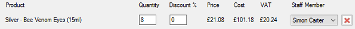

When creating orders or using the till, you can specify user defined discounts

The discount is an individual product or treatment discount, using the Till only the default
method of assigning discounts is available, when creating an order you can specify the
Deafault method or Mimic the Sage method of discounts.
Default - When
the default method is used, the discount given is
product discount, then user discount plus sale discount.
Sage - The
Sage method of providing discount is to give the product
discount, then remove the sale discount and then to remove
the user discount.
Product Discount
Each product can be provided an individual discount, this is based on percentage. See
Product Item Edit for details on how to set a product level discount.
User Discount
The user discount is given on a product by product basis and is a percentage that is provided
in the Discount box (see above).
Sale Discount
The sale discount is a further discount that can be applied to the whole sale, this can be a
percentage or fixed monetary value.